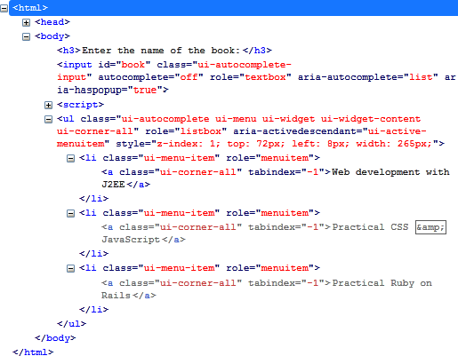
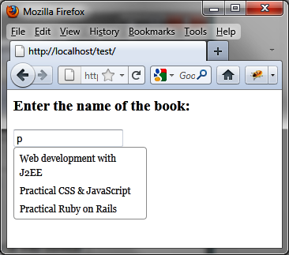

{% include JB/setup %}
{% raw %}
<div>
<div class="book" title="Formatting Content"><div class="book"><div class="book"><div class="book"><h1 class="title2"><a id="formatting_content-id7" class="calibre1"></a>Formatting Content</h1></div></div></div><p class="calibre7">The <code class="literal">autocomplete ()</code> method
    creates a list of suggestions below the input field and adds new CSS
    classes to the elements concerned to give them the appropriate
    style.</p><p class="calibre7">In <a class="ulink" href="ch09s02.html#html_code_generated_by_the_autocomplete" title="Figure 9-2. HTML code generated by the autocomplete () method">Figure 9-2</a>, for
    example, the HTML generated by jQuery UI is modified by the <code class="literal">autocomplete ()</code> instruction (the code was
    recovered using the Firebug extension in Firefox).</p><p class="calibre7">The <code class="literal">&lt;input&gt;</code> element is
    slightly modified, while the HTML now contains a <code class="literal">&lt;ul&gt;</code> corresponding to the list that
    appears below the input field. Each element of the list is a <code class="literal">&lt;li&gt;</code> with a <code class="literal">ui-menu-item</code> CSS class.</p><p class="calibre7">We can customize the display by editing the CSS classes with the
    addition of a <code class="literal">&lt;style&gt;</code> tag. For
    example, if we modify the <code class="literal">ui-menu-item</code>
    class associated with <code class="literal">&lt;li&gt;</code>
    elements, we can change the font used for the list of suggestions, as
    shown in <a class="ulink" href="ch09s02.html#customized_list_of_suggestions" title="Figure 9-3. Customized list of suggestions">Figure 9-3</a>:</p><a id="I_programlisting9_d1e7207" class="firstname"></a><pre class="programlisting">&lt;script src = jquery.js&gt;&lt;/script&gt;
&lt;script src = jqueryui/js/jquery-ui-1.8.16.custom.min.js&gt;&lt;/script&gt;

&lt;link rel=stylesheet type=text/css
      href=jqueryui/css/smoothness/jquery-ui-1.8.16.custom.css /&gt;

<span class="firstname"><strong class="userinput">&lt;style type=text/css&gt;</strong></span>
  <span class="firstname"><strong class="userinput">li.ui-menu-item {</strong></span>
    <span class="firstname"><strong class="userinput">font-size : 12px;</strong></span>
    <span class="firstname"><strong class="userinput">font-family : georgia;</strong></span>
  <span class="firstname"><strong class="userinput">}</strong></span>
<span class="firstname"><strong class="userinput">&lt;/style&gt;</strong></span>

&lt;h3&gt;Enter the name of the book:&lt;/h3&gt;
&lt;input id=book /&gt;

&lt;script&gt;

// array of items to be proposed in the list of suggestions
var books = ["Web development with J2EE", "Practical CSS &amp; JavaScript",
             "Practical Ruby on Rails", "Introduction to HTML &amp; CSS",
             "jQuery UI"];

$("input#book").autocomplete ({
  source : books
});

&lt;/script&gt;</pre><div class="book"><div class="figure"><a id="html_code_generated_by_the_autocomplete" class="firstname"></a><div class="book"><div class="book"><a id="I_mediaobject9_d1e7231" class="firstname"></a></div></div><p class="title4">Figure 9-2. HTML code generated by the autocomplete () method</p></div></div><div class="book"><div class="figure"><a id="customized_list_of_suggestions" class="firstname"></a><div class="book"><div class="book"><a id="I_mediaobject9_d1e7239" class="firstname"></a></div></div><p class="title4">Figure 9-3. Customized list of suggestions</p></div></div></div></div>

{% endraw %}

